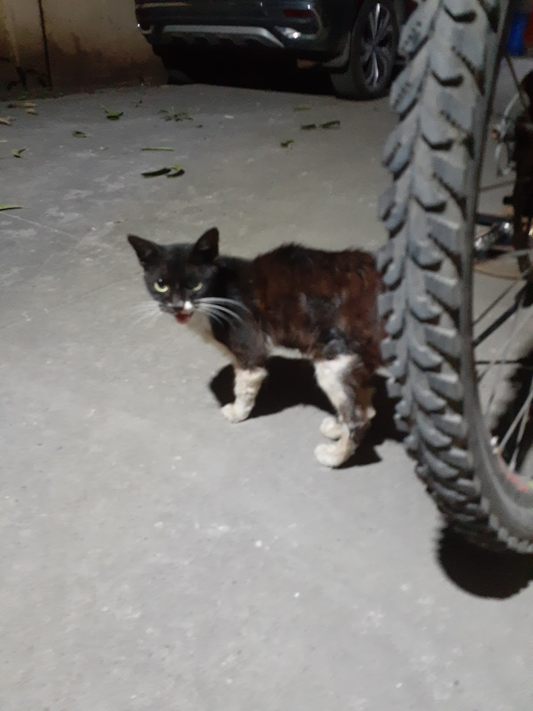
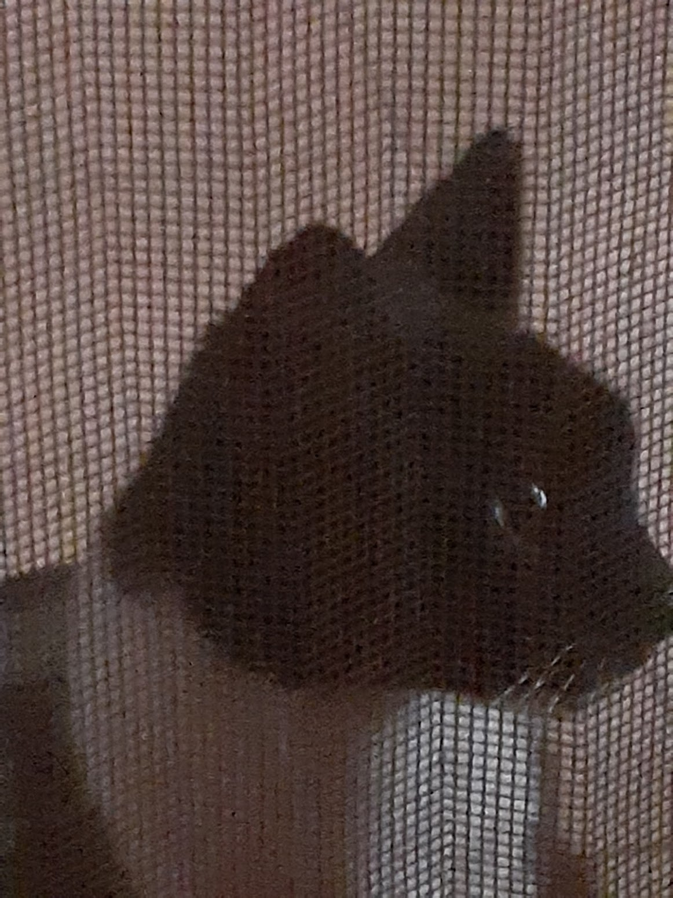
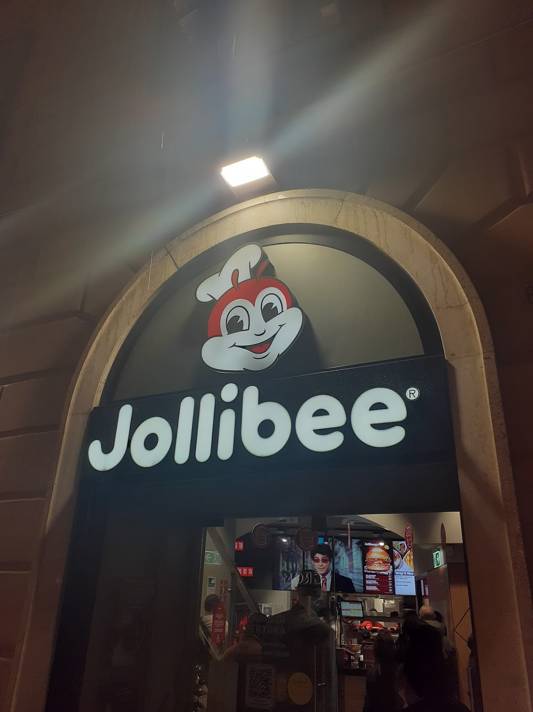

Starting my MD-PhD at Washington University in St. Louis this fall
Last week in the lab: week of June 28
~8 weeks remaining
What’s been making me happy
[Please fill in]
[Please fill in]
[Please fill in]
September 2024
Where it all started
My first lab meeting (September 20, 2024)
“What do I do? Curating humanfoods.csv and creating trnL and 12Sv5 references. Running the pipeline, creating phyloseq objects, curating the megaphyloseq. Data collection and analysis. Learning and answering questions!”
— me, slide 4, September 2024
I was about a month in and still learning, so my first presentation ended with discussion questions for the lab rather than answers.
The questions I asked you
How can the references be curated to avoid misassignment?
How do we standardize data collection and metadata fields?
How do we standardize common names assignment?
How can documentation be improved?
What individual practices should be implemented lab-wide?
The state of things when I arrived
What existed
Pipeline-to-Phyloseq R scripts for single-marker runs (trnL or 12S processed separately)
Manual scp to get files from DCC
Taxonomy via taxonomizr + 70 GB SQL database on Isilon
Missing accessions required manual lookup and hardcoded fixes
A megaphyloseq that hadn’t been updated in nearly two years
No central bioinformatics documentation (wet lab protocols existed)
What didn’t exist
Multiplex support (trnL + 12S pooled in one run)
An automated way to build the megaphyloseq
Common name assignment beyond manual curation
Human read anonymization for SRA deposition
PacBio 16S pipeline
A bioinformatics documentation website
Rewriting the Pipeline
Building for the multiplex era
Pipeline-to-Phyloseq: before and after
Before
One marker at a time
Manual scp from DCC
Manual QZV unzipping for read counts
70 GB SQL database on Isilon
Manual accession lookups for missing taxa
Required familiarity with the specific scripts to run
→
After
Handles multiplexed runs natively (trnL + 12S from one pooled run)
Automated rsync with staging directory
Programmatic read count extraction
Custom taxonomy functions in foodseq.tools, no Isilon SQL dependency
Template format: change a few variables and run
Built-in validation, QC plots, and documentation
The move to multiplex sequencing was the driving force; the existing code was designed for single-marker runs and wasn’t set up to handle trnL and 12S pooled together, which motivated a rewrite.
The journey of a sequencing run
The Megaphyloseq
A cumulative archive of every sequencing run
The megaphyloseq
“We need new megaphyloseq objects. Generally, the trnL MPS hasn’t been updated in nearly two years while the 12S MPS has never been generated.”
— me, October 2025, slide 20
I built Isilon-to-Phyloseq to solve this. You change one line (the run folder name) and hit go; it handles the Isilon → DCC → Box → merge → Google Sheets logging flow automatically.
103
unique runs across both markers
31,631
total samples (17,895 trnL + 13,736 12Sv5)
Dorothy, Anna, and I have been adding runs and metadata since November 2025, with automated changelog tracking. Run dates span from February 2020 to March 2026.
Megaphyloseq growth over time
What’s in the trnL megaphyloseq
What’s in the 12Sv5 megaphyloseq
What makes each cohort unique?
For each project, the most overrepresented food compared to the global detection rate:
Cross-study PCA of the trnL megaphyloseq
Cross-study PCA of the 12Sv5 megaphyloseq
Case study: is “elk” really elk?
Having 31,000 samples in one object lets us ask cross-study questions. The 12S megaphyloseq contains 26 ASVs assigned to Cervus canadensis (elk); four appear in more than one sample. Here’s where they show up, compared to the top Homo sapiens ASV:
How similar are the elk ASVs to human?
Each elk ASV aligned against its closest Homo sapiens ASV by sequence identity. Red tiles are mismatches; base pairs shown at each differing position (human on top, elk below).
Elk ASV 1 (394 samples) differs from its closest human ASV by only 9 bases out of ~100 bp. Elk ASV 4 differs by just 1 base.
Analysis Projects
Using the tools, not just building them
Analysis projects along the way
Building tools was only part of the job; I was also running analyses with them.
Project
What I did
When
Wastewater 2.0
Ran trnL + 12S pipeline on WWTP samples; relative abundance, PCA, volume optimization (50 mL sufficient)
2025
Jotï samples
Ran 12S pipeline and assignment on indigenous Venezuelan samples; phylogenetic tree
Spring–Fall 2025
Auri’s PacBio 16S
Adapted existing code into a PacBio 16S pipeline for mouse cecum/colon samples
Fall 2025–present
trnLGH vs. trnLCD
Quick side project comparing the ~50 bp GH region to the ~600 bp CD region for resolution
Fall 2025
Cebu, DOST
Pipeline runs, PCA, and dietary profiling for Filipino cohorts
Spring 2026
Lifelines, GMAP, ABC, …
Routine pipeline runs and phyloseq creation for ongoing studies
Fall 2024 onward
Ben’s FNDDS work, Dorothy’s celiac study
Data extraction, filtering, and analysis support
Summer–Fall 2024
Each of these projects fed back into the pipeline; bugs were discovered, features were added, and edge cases got documented.
The Human Read Anonymizer
A recurring theme across my presentations
The anonymizer over time
This tool has appeared in every one of my presentations. Here’s the progression:
May 2025
Version 1: list-based matching against known human ASVs. Four-day runtimes, broken job arrays, mismatched paired files, and human reads slipping through.
“Currently, running the code on SEEM takes about four days; unreasonably high runtimes make the tool impractical.”
— me, May 2025, slide 11
Oct 2025
Version 2: switched to a k-mer matching approach (inspired by translating Ben Callahan’s C++ code). Detection was better, but replacement sequences were getting filtered by DADA2 (116 ASVs existed only pre-filtering, 45 only post-filtering).
Feb 2026
Version 3: primer-aware replacement with preserved quality scores and fixed SNP positions. trnL data fully intact; 12S denoising issue resolved.
Now
Documented on the handbook with HPC batch processing scripts, built-in verification, and a full explanation of the detection and replacement logic.
Common Name Assignment
Turning Latin binomials into dietary names
assign_common_names()
“Common Names Assignment: This has been on my back-burner for a year now, but I need to manually fill in the common names CSVs at some point.”
— me, October 2025, slide 36
I presented the details of this in February, so I’ll keep it brief. The core problem is that a single ASV can match dozens of species across multiple genera, and you need a concise dietary name, not a list of Latin binomials.
Since the February presentation
Function is documented on the handbook with downloadable R code and the trnL common names CSV
301 trnL ASVs processed from the megaphyloseq; 79% resolve with no conflicts
Still needs wider testing by others in the lab
A few example outputs as a reminder
Input
Output
10 Allium spp.
Onions, leeks, scallions, and chives
25 Citrus spp.
Oranges, lemons, grapefruits, and other citruses
Lactuca sativa
Lettuce
PacBio 16S Pipeline
Full-length microbiome sequencing
PacBio 16S pipeline
“This summer, Auri’s 16S run of cecum and colon samples from mice having undergone colostomies and sham surgeries completed, but I have been having a lot of trouble completing the run, partly due to the size of the files.”
— me, October 2025, slide 24
What it includes
DADA2 pipeline for PacBio HiFi long reads (~1500 bp), adapted from existing code
PacBioErrfun error model (not Illumina defaults)
GreenGenes2 taxonomy at species level
32 CPUs, 256 GB RAM on DCC via SLURM
Singularity container for reproducibility
Intermediate RDS saves for crash recovery
Why it matters
trnL / 12S → what subjects eat
16S → the gut microbiome
Together → diet–microbiome relationships
This is a separate workflow from the dietary markers, and 16S is out of scope for the FoodSeq paper, but the pipeline exists and is documented on the handbook.
Common names: CSV creation and assign_common_names()
Human read anonymization
PacBio 16S
Design choices
Peer-to-peer voice, not a textbook
Every code block preceded by explanatory prose
Duke-specific and general-audience tabs
Flowcharts and diagrams
Honest “To-do” markers where things are incomplete
Built with
MkDocs Material theme
Source on source branch, deploys via GitHub Actions
~60 commits since January 2026
Where This Is All Going
The FoodSeq pipeline paper
The FoodSeq pipeline paper
A methods/resource paper on the pipeline and curated reference database for dietary DNA profiling, led by Anna and to be written over the coming months as a group effort.
What it is
Not a software paper; the database, curation logic, and biological validation are central
Framed analogously to QIIME 2 or GATK for standardizing dietary metabarcoding
Seven published papers already use FoodSeq, and four provide independent validation
Why it’s possible now
The handbook documents the methods core
Published validation means we don’t start from zero
The pipeline is stable and in use across 103 runs and 31,000+ samples
From discussion questions to working implementations:
The question I asked (Sept 2024)
What exists now
“How can the references be curated to avoid misassignment?”
Custom assign_trnL() and assign_12S() with documented curation rules; reference database construction on the handbook; megaphyloseq enables cross-study QC (e.g., the elk investigation)
“How do we standardize data collection and metadata fields?”
Pipeline validates Sample_ID, type, pcr_plate; template format enforces consistency
“How do we standardize common names assignment?”
assign_common_names() with multi-level conflict resolution (301 ASVs, 79% conflict-free)
“How can documentation be improved?”
20-page FoodSeq Handbook at lad-lab.github.io
“What individual practices should be implemented lab-wide?”
Template-based pipeline, automated QC, changelog-tracked megaphyloseq, version control
Recent travels
London
Kruger National Park
Chapel Hill

Chennai

Chennai

Rome
Thank you
To everyone in this lab for the mentorship, collaboration, feedback, and bug reports.